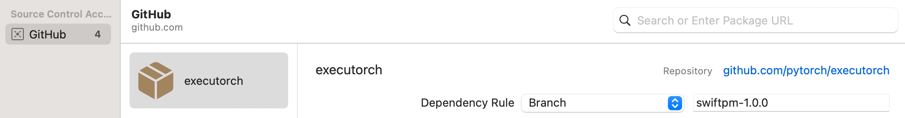

Using ExecuTorch on iOS¶
ExecuTorch supports both iOS and macOS via Objective-C, Swift, and C++. ExecuTorch also provides backends to leverage Core ML and Metal Performance Shaders (MPS) for hardware-accelerated execution on Apple platforms.
Integration¶
The ExecuTorch Runtime for iOS and macOS (ARM64) is distributed as a collection of prebuilt .xcframework binary targets. These targets are compatible with both iOS and macOS devices and simulators and are available in both release and debug modes:
executorch- Core runtime componentsexecutorch_llm- LLM-specific runtime componentsbackend_coreml- Core ML backendbackend_mps- MPS backendbackend_xnnpack- XNNPACK backendkernels_llm- Custom kernels for LLMskernels_optimized- Accelerated generic CPU kernelskernels_quantized- Quantized kernelskernels_torchao- Quantized CPU kernels from torchao
Link your binary with the ExecuTorch runtime and any backends or kernels used by the exported ML model. It is recommended to link the core runtime to the components that use ExecuTorch directly, and link kernels and backends against the main app target.
Note: To access logs, link against the Debug build of the ExecuTorch runtime, i.e., the executorch_debug framework. For optimal performance, always link against the Release version of the deliverables (those without the _debug suffix), which have all logging overhead removed.
Swift Package Manager¶
The prebuilt ExecuTorch runtime, backend, and kernels are available as a Swift PM package.
Xcode¶
In Xcode, go to File > Add Package Dependencies. Paste the URL of the ExecuTorch repo into the search bar and select it. Make sure to change the branch name to the desired ExecuTorch version in format “swiftpm-

Then select which ExecuTorch framework should link against which target.

Click the screenshot below to watch the demo video on how to add the package and run a simple ExecuTorch model on iOS.

CLI¶
Add a package and target dependencies on ExecuTorch to your package file like this:
// swift-tools-version:5.9
import PackageDescription
let package = Package(
name: "YourPackageName",
platforms: [
.iOS(.v17),
.macOS(.v12),
],
products: [
.library(name: "YourPackageName", targets: ["YourTargetName"]),
],
dependencies: [
// Use "swiftpm-<version>.<year_month_day>" branch name for a nightly build.
.package(url: "https://github.com/pytorch/executorch.git", branch: "swiftpm-0.7.0")
],
targets: [
.target(
name: "YourTargetName",
dependencies: [
.product(name: "executorch", package: "executorch"),
.product(name: "backend_xnnpack", package: "executorch"),
.product(name: "kernels_optimized", package: "executorch"),
// Add other backends and kernels as needed.
]),
]
)
Then check if everything works correctly:
cd path/to/your/package
swift package resolve
# or just build it
swift build
Building from Source¶
Another way to integrate the ExecuTorch runtime is to build the necessary components from sources locally and link against them. This is useful when customizing the runtime.
Install Xcode 15+ and Command Line Tools:
xcode-select --install
Clone ExecuTorch:
git clone -b viable/strict https://github.com/pytorch/executorch.git --depth 1 --recurse-submodules --shallow-submodules && cd executorch
Set up Python 3.10+ and activate a virtual environment:
python3 -m venv .venv && source .venv/bin/activate && pip install --upgrade pip
Install the required dependencies, including those needed for the backends like Core ML or MPS, if you plan to build them later:
./install_requirements.sh
# CoreML-only requirements:
./backends/apple/coreml/scripts/install_requirements.sh
Install CMake:
Download the macOS binary distribution from the CMake website, open the .dmg file, move CMake.app to the /Applications directory, and then run the following command to install the CMake command-line tools:
sudo /Applications/CMake.app/Contents/bin/cmake-gui --install
Use the provided script to build .xcframeworks:
The following command will build the ExecuTorch runtime components along with all available kernels and backends for the Apple platform in both Release and Debug modes:
./scripts/build_apple_frameworks.sh
After the build finishes successfully, the resulting frameworks can be found in the cmake-out directory.
Copy them to your project and link them against your targets.
Linkage¶
ExecuTorch initializes its backends and kernels (operators) during app startup by registering them in a static dictionary. If you encounter errors like “unregistered kernel” or “unregistered backend” at runtime, you may need to explicitly force-load certain components. Use the -all_load or -force_load linker flags in your Xcode build configuration to ensure components are registered early.
Here’s an example of a Xcode configuration file (.xcconfig):
ET_PLATFORM[sdk=iphonesimulator*] = simulator
ET_PLATFORM[sdk=iphoneos*] = ios
ET_PLATFORM[sdk=macos*] = macos
OTHER_LDFLAGS = $(inherited) \
-force_load $(BUILT_PRODUCTS_DIR)/libexecutorch_debug_$(ET_PLATFORM).a \
-force_load $(BUILT_PRODUCTS_DIR)/libbackend_coreml_$(ET_PLATFORM).a \
-force_load $(BUILT_PRODUCTS_DIR)/libbackend_mps_$(ET_PLATFORM).a \
-force_load $(BUILT_PRODUCTS_DIR)/libbackend_xnnpack_$(ET_PLATFORM).a \
-force_load $(BUILT_PRODUCTS_DIR)/libkernels_optimized_$(ET_PLATFORM).a \
-force_load $(BUILT_PRODUCTS_DIR)/libkernels_quantized_$(ET_PLATFORM).a
Note: In the example above, we link against the Debug version of the ExecuTorch runtime (libexecutorch_debug) to preserve the logs. Normally, that does not impact the performance too much. Nevertheless, remember to link against the release version of the runtime (libexecutorch) for the best performance and no logs.
You can assign such a config file to your target in Xcode:
Add the
.xcconfigfile to your project.Navigate to the project’s Info tab.
Select the configuration file in the build configurations for Release (or Debug) mode.
Runtime API¶
ExecuTorch provides native Objective-C APIs, automatically bridged to Swift, for interacting with the runtime. These APIs act as wrappers around the core C++ components found in extension/tensor and extension/module, offering a more idiomatic experience for Apple platform developers.
Note: These Objective-C/Swift APIs are currently experimental and subject to change.
Importing¶
Once linked against the executorch framework, you can import the necessary components.
Objective-C (Objective-C++):
// Import the main umbrella header for Module/Tensor/Value wrappers.
#import <ExecuTorch/ExecuTorch.h>
// If using C++ directly alongside Objective-C++, you might still need C++ headers.
#import <executorch/extension/module/module.h>
#import <executorch/extension/tensor/tensor.h>
Swift:
import ExecuTorch
Example¶
Here’s a concise example demonstrating how to load a model, prepare input, run inference, and process output using the Objective-C and Swift API. Imagine you have a MobileNet v3 model (mv3.pte) that takes a [1, 3, 224, 224] float tensor as input and outputs logits.
Objective-C:
NSString *modelPath = [[NSBundle mainBundle] pathForResource:@"mv3" ofType:@"pte"];
// Create a module with the model file path. Nothing gets loaded into memory just yet.
ExecuTorchModule *module = [[ExecuTorchModule alloc] initWithFilePath:modelPath];
NSError *error; // Optional error output argument to learn about failures.
// Force-load the program and 'forward' method. Otherwise, it's loaded at the first execution.
[module loadMethod:@"forward" error:&error];
float *imageBuffer = ...; // Existing image buffer.
// Create an input tensor referencing the buffer and assuming the given shape and data type.
ExecuTorchTensor *inputTensor = [[ExecuTorchTensor alloc] initWithBytesNoCopy:imageBuffer
shape:@[@1, @3, @224, @224]
dataType:ExecuTorchDataTypeFloat];
// Execute the 'forward' method with the given input tensor and get output values back.
NSArray<ExecuTorchValue *> *outputs = [module forwardWithTensor:inputTensor error:&error];
// Get the first output value assuming it's a tensor.
ExecuTorchTensor *outputTensor = outputs.firstObject.tensorValue;
// Access the output tensor data.
[outputTensor bytesWithHandler:^(const void *pointer, NSInteger count, ExecuTorchDataType dataType) {
float *logits = (float *)pointer;
// Use logits...
}];
Swift:
let modelPath = Bundle.main.path(forResource: "mv3", ofType: "pte")!
// Create a module with the model file path. Nothing gets loaded into memory just yet.
let module = Module(filePath: modelPath)
// Force-load the program and 'forward' method. Otherwise, it's loaded at the first execution.
try module.load("forward")
let imageBuffer: UnsafeMutableRawPointer = ... // Existing image buffer
// Create an input tensor referencing the buffer and assuming the given shape and data type.
let inputTensor = Tensor<Float>(&imageBuffer, shape: [1, 3, 224, 224])
// Execute the 'forward' method with the given input tensor and get an output tensor back.
let outputTensor = try Tensor<Float>(module.forward(inputTensor))
// Copy the tensor data into logits array for easier access.
let logits = outputTensor.scalars()
// Use logits...
Tensor¶
A tensor is a multi-dimensional array of elements (such as floats or integers) and includes metadata like shape (dimensions) and data type. Tensors are used to feed inputs to a model and retrieve outputs, or for any computation you need to do on raw data. You can create tensors from simple arrays of numbers, inspect their properties, read or modify their contents, and even reshape or copy them.
ExecuTorch offers ExecuTorchTensor class in Objective-C and two tensor types in Swift:
AnyTensor: A type-erased tensor, bridged fromExecuTorchTensorin Objective-C. You might use it when the tensor’s data type is only known at runtime, for example, when converting from an untypedValueobject before casting it to a genericTensor<T>.Tensor<T: Scalar>: A generic, type-safe wrapper around AnyTensor. This is the recommended type for most use cases in Swift. It ensures the element type (e.g.,Float,Int) is known at compile time, providing type-safe access to tensor data and catching type mismatches early.
You can convert between them using tensor.anyTensor (to get the underlying AnyTensor) and anyTensor.asTensor() (to convert to a typed Tensor<T> if the data types match).
Key Properties:¶
dataType: The element type (e.g.,.float,.int,.byte). InTensor<T>, this is determined byT.shape: An array ofIntdescribing the size of each dimension.count: The total number of elements.strides: The jump in memory needed to advance one element along each dimension.dimensionOrder: The order of dimensions in memory.shapeDynamism: Indicates if the tensor shape can change (.static,.dynamicBound,.dynamicUnbound).
Initialization:¶
You can create a new tensor from an existing one, either as a view (which shares the same underlying data) or as a copy (which gets its own unique data).
View:
init(_:)creates a new tensor instance that points to the same memory as the original. Modifying the data through one tensor will affect the other.Copy:
copy()creates a completely independent duplicate of the tensor, including its own copy of the data.
Objective-C:
// Create a view.
ExecuTorchTensor *tensorView = [[ExecuTorchTensor alloc] initWithTensor:originalTensor];
// Create a copy.
ExecuTorchTensor *tensorCopy = [originalTensor copy];
Swift:
// Create a view.
let tensorView = Tensor(originalTensor)
// Create a copy.
let tensorCopy = originalTensor.copy()
Tensors can be initialized directly from memory pointers or Data objects.
init(bytesNoCopy:...): Creates a tensor that references an existing memory buffer without copying. The buffer’s lifetime must be managed manually and must exceed the tensor’s.init(bytes:...): Creates a tensor by copying data from a memory buffer.init(data:...): Creates a tensor using anNSData(Objective-C) orData(Swift) object, referencing its bytes without copying.
Objective-C:
// Create by copying bytes.
float data[] = {1.0f, 2.0f, 3.0f, 4.0f};
NSArray<NSNumber *> *shape = @[@2, @2];
ExecuTorchTensor *tensorFromBytes = [[ExecuTorchTensor alloc] initWithBytes:data
shape:shape
dataType:ExecuTorchDataTypeFloat];
// Create from NSData (no copy).
NSData *nsData = [NSData dataWithBytes:data length:sizeof(data)];
ExecuTorchTensor *tensorFromNSData = [[ExecuTorchTensor alloc] initWithData:nsData
shape:shape
dataType:ExecuTorchDataTypeFloat];
Swift:
// Create from a buffer without copying (unsafe).
var mutableData: [Float] = [1.0, 2.0, 3.0, 4.0]
let tensorNoCopy = mutableData.withUnsafeMutableBytes { pointer in
Tensor<Float>(
bytesNoCopy: pointer.baseAddress!,
shape: [2, 2]
)
}
// Create from Data (no copy).
let data = Data(bytes: &mutableData, count: mutableData.count * MemoryLayout<Float>.size)
let tensorFromData = Tensor<Float>(data: data, shape: [2, 2])
The most convenient way to create tensors is from Swift arrays or single scalar values. The Tensor<T> API uses type inference to determine the dataType automatically.
objective-c:
// Create from an array of scalars.
NSArray<NSNumber *> *scalars = @[@(1), @(2), @(3)];
NSArray<NSNumber *> *shape = @[@3];
ExecuTorchTensor *tensorFromScalars = [[ExecuTorchTensor alloc] initWithScalars:scalars
shape:shape
dataType:ExecuTorchDataTypeInt];
// Create a float scalar tensor.
ExecuTorchTensor *scalarTensor = [[ExecuTorchTensor alloc] initWithFloat:3.14f];
Swift:
// Create from an array of scalars (infers shape and copies data).
let tensor = Tensor([1.0, 2.0, 3.0, 4.0]) // Creates a Tensor<Double> with shape [4]
// Specify shape.
let tensorWithShape = Tensor([1, 2, 3, 4, 5, 6], shape: [2, 3]) // Creates Tensor<Int>
// Create without copying from an `inout` array.
var liveData: [Int32] = [10, 20, 30]
let tensorNoCopy = Tensor(&liveData) // Modifying `liveData` affects `tensorNoCopy`
// Create an Int scalar tensor.
let scalarTensor = Tensor(42) // Infers Tensor<Int> with shape []
Factory Methods:¶
ExecuTorch provides a rich set of factory methods to create tensors with pre-filled or random data.
empty: Creates a tensor with uninitialized data.full: Creates a tensor filled with a specified scalar value.ones: Creates a tensor filled with ones.zeros: Creates a tensor filled with zeros.rand: Creates a tensor with random values uniformly distributed in[0, 1).randn: Creates a tensor with random values from a normal distribution (mean 0, variance 1).randint: Creates a tensor with random integers in a specified range[low, high).
Each method has a like: variant that creates a new tensor with the same shape and properties as an existing one.
Objective-C:
// Create a 2x2 tensor filled with zeros.
ExecuTorchTensor *zeros = [ExecuTorchTensor zerosTensorWithShape:@[@2, @2]
dataType:ExecuTorchDataTypeFloat];
// Create a tensor of ones with the same shape as `zeros`.
ExecuTorchTensor *ones = [ExecuTorchTensor onesTensorLikeTensor:zeros];
Swift:
// Create a 2x2 tensor filled with the value 7.
let fullTensor = Tensor<Int32>.full(shape: [2, 2], scalar: 7)
// Create a 3x3 tensor of ones.
let onesTensor = Tensor<Float>.ones(shape: [3, 3])
// Create a tensor of zeros with the same shape as onesTensor.
let zerosTensor = Tensor<Float>.zeros(like: onesTensor)
// Create a tensor with random integers between 10 (inclusive) and 20 (exclusive).
let randomInts = Tensor<Int>.randint(low: 10, high: 20, shape: [5])
// Create a 2x2 type-erased tensor filled with zeros and explicit data type.
let anyZeros = AnyTensor.zeros(shape: [2, 2], dataType: .float)
// Create a 2x3 type-erased tensor filled with random values and explicit data type.
let anyRand = AnyTensor.rand(shape: [2, 3], dataType: .double)
Accessing Data:¶
Reading data:
scalars(): Returns a copy of the tensor’s elements as a new[T]array.withUnsafeBytes(_:): Provides a type-safe, immutable buffer pointer (UnsafeBufferPointer<T>) for efficient, direct memory access without creating a new array.bytesWithHandler:: The Objective-C andAnyTensorapproach, which uses a callback with a rawvoid *pointer and requires manual type casting.
Objective-C:
[tensor bytesWithHandler:^(const void *pointer, NSInteger count, ExecuTorchDataType dataType) {
if (dataType == ExecuTorchDataTypeFloat) {
const float *floatPointer = (const float *)pointer;
NSLog(@"First float element: %f", floatPointer[0]);
}
}];
Swift:
let tensor = Tensor<Float>([1.0, 2.0, 3.0, 4.0], shape: [2, 2])
// Get data copy as a Swift array.
let scalars = tensor.scalars()
print("All scalars: \(scalars)") // [1.0, 2.0, 3.0, 4.0]
// Access data via a buffer pointer.
tensor.withUnsafeBytes { buffer in
print("First float element: \(buffer.first ?? 0.0)")
}
anyTensor.bytes { pointer, count, dataType in
// Must check data type and manually cast the pointer for type-erased tensor.
if dataType == .float {
let buffer = UnsafeBufferPointer(start: pointer.assumingMemoryBound(to: Float.self), count: count)
print("First float element from AnyTensor: \(buffer.first ?? 0.0)")
}
}
Modifying Data:
withUnsafeMutableBytes(_:): The preferred Swift method. Provides a type-safe, mutable buffer pointer (UnsafeMutableBufferPointer<T>) for in-place modification.mutableBytesWithHandler:: The Objective-C andAnyTensorequivalent.
Objective-C:
[tensor mutableBytesWithHandler:^(void *pointer, NSInteger count, ExecuTorchDataType dataType) {
if (dataType == ExecuTorchDataTypeFloat) {
float *floatPointer = (float *)pointer;
floatPointer[0] = 100.0f; // Modify the tensor's data.
}
}];
Swift:
let tensor = Tensor<Float>([1.0, 2.0, 3.0, 4.0], shape: [2, 2])
// Modify the tensor's data in place.
tensor.withUnsafeMutableBytes { buffer in
buffer[1] = 200.0
}
// tensor's data is now [1.0, 200.0, 3.0, 4.0]
anyTensor.mutableBytes { pointer, count, dataType in
if dataType == .float {
let buffer = UnsafeMutableBufferPointer(start: pointer.assumingMemoryBound(to: Float.self), count: count)
buffer[0] = 100.0 // Modify the AnyTensor's data
}
}
Resizing:¶
Tensors can be resized if their shape dynamism is not .static. Resizing only changes the tensor’s metadata (shape and strides) and does not reallocate or change the underlying data, so the new shape must have the same total number of elements.
Objective-C:
NSError *error;
BOOL success = [tensor resizeToShape:@[@4, @1] error:&error];
if (success) {
NSLog(@"Resized shape: %@", tensor.shape);
} else {
NSLog(@"Resize failed: %@", error);
}
Swift:
do {
try tensor.resize(to: [4, 1])
print("Resized shape: \(tensor.shape)")
} catch {
print("Resize failed: \(error)")
}
Equality:¶
You can check if two tensors are equal using the == operator. It compares their data type, shape, strides, dimension order, and all underlying element data. The shapeDynamism property is disregarded in this comparison.
Printing:¶
Tensors conform to CustomStringConvertible in Swift and implement -description in Objective-C, so you can print them directly to the console for easy debugging.
Value¶
The Value class (exposed as ExecuTorchValue in Objective-C) is a dynamic container that can hold different types of data, primarily used for model inputs and outputs. ExecuTorch methods accept and return arrays of Value objects.
Key Properties:¶
tag: Indicates the type of data held (e.g.,.tensor,.integer,.string,.boolean).isTensor,isInteger,isString, etc.: Boolean checks for the type.tensor,integer,string,boolean,double: Accessors for the underlying data (returnnilor a default value if the tag doesn’t match).
Initialization:¶
Create Value objects directly from the data they should hold.
Objective-C:
#import <ExecuTorch/ExecuTorch.h>
ExecuTorchTensor *tensor = [[ExecuTorchTensor alloc] initWithFloat:1.0f];
ExecuTorchValue *tensorValue = [[ExecuTorchValue alloc] valueWithTensor:tensor];
ExecuTorchValue *intValue = [[ExecuTorchValue alloc] valueWithInteger:100];
ExecuTorchValue *stringValue = [[ExecuTorchValue alloc] valueWithString:@"hello"];
ExecuTorchValue *boolValue = [[ExecuTorchValue alloc] valueWithBoolean:YES];
ExecuTorchValue *doubleValue = [[ExecuTorchValue alloc] valueWithDouble:3.14];
Swift:
import ExecuTorch
let tensor = Tensor(2.0)
let tensorValue = Value(tensor)
let intValue = Value(200)
let stringValue = Value("world")
let boolValue = Value(false)
let doubleValue = Value(2.718)
Also, in Swift, all the types that Value can hold conform to the ValueConvertible protocol, so you can create Value objects directly from them without explicitly wrapping them in Value constructors:
func processValue(_ value: ValueConvertible) {
// ...
}
processValue(1) // Value<Int>
processValue(1.0) // Value<Double>
processValue("hello") // Value<String>
processValue(true) // Value<Bool>
processValue(Tensor(1.0)) // Value<Tensor>
Module¶
The Module class (exposed as ExecuTorchModule in Objective-C) represents a loaded ExecuTorch model (.pte file). It provides methods to load the model program, inspect its methods, and execute them for inference.
Note: Module and its methods are not thread-safe. If you need to do concurrent inferences from multiple threads, create one Module per thread.
Initialization:¶
Create a Module instance by providing the file path to the .pte model. Initialization itself is lightweight and doesn’t load the program data immediately. You can also specify a ModuleLoadMode to control how the file is loaded, such as using memory mapping for efficiency.
Objective-C:
#import <ExecuTorch/ExecuTorch.h>
NSString *modelPath = [[NSBundle mainBundle] pathForResource:@"model" ofType:@"pte"];
ExecuTorchModule *module = [[ExecuTorchModule alloc] initWithFilePath:modelPath];
// Optional: specify load mode, e.g., memory mapping.
ExecuTorchModule *moduleMmap = [[ExecuTorchModule alloc] initWithFilePath:modelPath
loadMode:ExecuTorchModuleLoadModeMmap];
Swift:
import ExecuTorch
let modelPath = Bundle.main.path(forResource: "model", ofType: "pte")!
let module = Module(filePath: modelPath)
// Optional: specify load mode, e.g., memory mapping.
let moduleMmap = Module(filePath: modelPath, loadMode: .mmap)
Loading:¶
Model loading is deferred until explicitly requested or needed. You can load the entire program or individual methods. While execution calls can trigger loading automatically, it’s often more efficient to load methods explicitly beforehand.
load(): Loads the basic program structure. You can specify aModuleVerificationlevel, though minimal verification is used by default.load(_:): Loads the program structure and prepares a specific method (e.g., “forward”) for execution. This performs necessary setup like backend delegation and is recommended if you know which method you’ll run.isLoaded()/isLoaded(_:): Check loading status.
Objective-C:
NSError *error;
// Loads program and prepares 'forward' for execution.
BOOL success = [module loadMethod:@"forward" error:&error];
if (success) {
NSLog(@"Forward method loaded: %d", [module isMethodLoaded:@"forward"]);
} else {
NSLog(@"Failed to load method: %@", error);
}
Swift:
do {
// Loads program and prepares 'forward' for execution.
try module.load("forward")
print("Forward method loaded: \(module.isLoaded("forward"))")
} catch {
print("Failed to load method: \(error)")
}
Inspecting Method Metadata¶
You can programmatically inspect a method’s contract—its input/output types, tensor shapes, data types, and more—by retrieving its MethodMetadata. This is incredibly useful for building dynamic applications that can adapt to different models without hardcoding dimensions.
Objective-c:
NSError *error;
ExecuTorchMethodMetadata *metadata = [module methodMetadata:@"forward" error:&error];
if (metadata) {
// Check if the first input is a tensor.
ExecuTorchValueTag firstInputTag = [metadata.inputValueTags[0] unsignedIntValue];
if (firstInputTag == ExecuTorchValueTagTensor) {
// Get the metadata for the first input tensor.
ExecuTorchTensorMetadata *tensorMeta = metadata.inputTensorMetadata[@0];
if (tensorMeta) {
NSLog(@"Expected input shape: %@", tensorMeta.shape);
NSLog(@"Expected input data type: %ld", (long)tensorMeta.dataType);
// You can now dynamically create a matching input tensor.
}
}
}
Swift:
do {
// Easily inspect the "forward" method at runtime.
let metadata = try module.methodMetadata("forward")
// Check if the first input is a tensor and get its metadata.
if metadata.inputValueTags.first == .tensor,
let tensorMeta = metadata.inputTensorMetadata[0] {
print("Expected input shape: \(tensorMeta.shape)")
print("Expected input data type: \(tensorMeta.dataType)")
// Dynamically create a random tensor that matches the model's input specs.
let input = AnyTensor.rand(shape: tensorMeta.shape, dataType: tensorMeta.dataType)
// Use the dynamically created tensor for inference.
let outputs = try module.forward(input)
print("Successfully ran inference with dynamic input.")
}
} catch {
print("Failed to get metadata or run inference: \(error)")
}
Execution:¶
The Module class offers flexible ways to execute methods.
Inputs can be any type conforming to ValueConvertible (like Tensor, Int, Float, Bool, etc.).
execute(_:_:): Execute any available method by name with one or more inputs.forward(_:): A convenient shortcut for executing the common “forward” method.
The API provides overloads for single inputs, multiple inputs, or no inputs.
Outputs are returned in two ways:
As an array of
Values, letting you inspect and cast results yourself.As your expected type. The generic overloads decode the result directly into your desired Swift type (such as a single
Tensor<Float>, an array, or any custom type conforming to theValueSequenceConstructibleprotocol). If the output doesn’t match the expected type (e.g. multiple Values returned when a single object is expected, or a tensor data type mismatch), an invalid type error is thrown.
Objective-C:
ExecuTorchTensor *inputTensor1 = [[ExecuTorchTensor alloc] initWithScalars:@[@1.0f, @2.0f]];
ExecuTorchTensor *inputTensor2 = [[ExecuTorchTensor alloc] initWithScalars:@[@3.0f, @4.0f]];
ExecuTorchTensor *singleInputTensor = [[ExecuTorchTensor alloc] initWithFloat:5.0f];
NSError *error;
// Execute "forward" using the shortcut with an array of Tensors.
NSArray<ExecuTorchValue *> *outputs1 = [module forwardWithTensors:@[inputTensor1, inputTensor2] error:&error];
if (outputs1) {
NSLog(@"Forward output count: %lu", (unsigned long)outputs1.count);
} else {
NSLog(@"Execution failed: %@", error);
}
// Execute "forward" with a single Tensor input.
NSArray<ExecuTorchValue *> *outputs2 = [module forwardWithTensor:singleInputTensor error:&error];
if (outputs2) {
NSLog(@"Forward single input output count: %lu", (unsigned long)outputs2.count);
} else {
NSLog(@"Execution failed: %@", error);
}
// Execute a potentially different method by name.
NSArray<ExecuTorchValue *> *outputs3 = [module executeMethod:@"another_method"
withInput:[[ExecuTorchValue alloc] valueWithTensor:inputTensor1]
error:&error];
// Process outputs (assuming first output is a tensor).
if (outputs1) {
ExecuTorchValue *firstOutput = outputs1.firstObject;
if (firstOutput.isTensor) {
ExecuTorchTensor *resultTensor = firstOutput.tensorValue;
// Process resultTensor.
}
}
Swift:
let inputTensor1 = Tensor<Float>([1.0, 2.0])
let inputTensor2 = Tensor<Float>([3.0, 4.0])
let singleInputTensor = Tensor<Float>([5.0])
do {
// Execute "forward" using the shortcut with an array of Tensors.
let outputs1 = try module.forward([inputTensor1, inputTensor2])
print("Forward output count: \(outputs1.count)")
// Execute "forward" with a single Tensor input.
let outputs2 = try module.forward(singleInputTensor)
print("Forward single input output count: \(outputs2.count)")
// Execute a potentially different method by name.
let outputs3 = try module.execute("another_method", [inputTensor1])
// Process outputs by converting the first output Value to a typed Tensor<Float>.
if let outputTensor: Tensor<Float> = outputs1.first?.tensor() {
// Now you have a type-safe tensor and can access its data easily.
let logits = try outputTensor.scalars()
print("First 5 logits: \(logits.prefix(5))")
}
// Try casting the outputs to a single typed object.
let tensorOutput = try Tensor<Float>(module.forward(inputTensor1, inputTensor2))
let logits = tensorOutput.scalars()
} catch {
print("Execution failed: \(error)")
}
Method Names:¶
You can query the available method names in the model after the program is loaded.
Objective-C:
NSError *error;
// Note: methodNames: will load the program if not already loaded.
NSSet<NSString *> *names = [module methodNames:&error];
if (names) {
NSLog(@"Available methods: %@", names);
} else {
NSLog(@"Could not get method names: %@", error);
}
Swift:
do {
// Note: methodNames() will load the program if not already loaded.
let names = try module.methodNames()
print("Available methods: \(names)") // Output: e.g., {"forward"}
} catch {
print("Could not get method names: \(error)")
}
Logging¶
ExecuTorch provides APIs for logging in Objective-C and Swift via the ExecuTorchLog (Log in Swift) singleton. You can subscribe custom log sinks conforming to the ExecuTorchLogSink (LogSink in Swift) protocol to receive internal ExecuTorch log messages.
Note: Logs are stripped in the Release builds of ExecuTorch frameworks. To capture logs, link against the Debug builds (e.g., executorch_debug) during development.
Objective-C:
#import <ExecuTorch/ExecuTorch.h>
#import <os/log.h>
@interface MyClass : NSObject<ExecuTorchLogSink>
@end
@implementation MyClass
- (instancetype)init {
self = [super init];
if (self) {
#if DEBUG
[ExecuTorchLog.sharedLog addSink:self];
#endif
}
return self;
}
- (void)dealloc {
#if DEBUG
[ExecuTorchLog.sharedLog removeSink:self];
#endif
}
#if DEBUG
- (void)logWithLevel:(ExecuTorchLogLevel)level
timestamp:(NSTimeInterval)timestamp
filename:(NSString *)filename
line:(NSUInteger)line
message:(NSString *)message {
NSString *logMessage = [NSString stringWithFormat:@"%@:%lu %@", filename, (unsigned long)line, message];
switch (level) {
case ExecuTorchLogLevelDebug:
os_log_with_type(OS_LOG_DEFAULT, OS_LOG_TYPE_DEBUG, "%{public}@", logMessage);
break;
case ExecuTorchLogLevelInfo:
os_log_with_type(OS_LOG_DEFAULT, OS_LOG_TYPE_INFO, "%{public}@", logMessage);
break;
case ExecuTorchLogLevelError:
os_log_with_type(OS_LOG_DEFAULT, OS_LOG_TYPE_ERROR, "%{public}@", logMessage);
break;
case ExecuTorchLogLevelFatal:
os_log_with_type(OS_LOG_DEFAULT, OS_LOG_TYPE_FAULT, "%{public}@", logMessage);
break;
default:
os_log(OS_LOG_DEFAULT, "%{public}@", logMessage);
break;
}
}
#endif
@end
Swift:
import ExecuTorch
import os.log
public class MyClass {
public init() {
#if DEBUG
Log.shared.add(sink: self)
#endif
}
deinit {
#if DEBUG
Log.shared.remove(sink: self)
#endif
}
}
#if DEBUG
extension MyClass: LogSink {
public func log(level: LogLevel, timestamp: TimeInterval, filename: String, line: UInt, message: String) {
let logMessage = "\(filename):\(line) \(message)"
switch level {
case .debug:
os_log(.debug, "%{public}@", logMessage)
case .info:
os_log(.info, "%{public}@", logMessage)
case .error:
os_log(.error, "%{public}@", logMessage)
case .fatal:
os_log(.fault, "%{public}@", logMessage)
default:
os_log("%{public}@", logMessage)
}
}
}
#endif
Note: In the example, the logs are intentionally stripped out when the code is not built for Debug mode, i.e., the DEBUG macro is not defined or equals zero.
Debugging¶
If you are linking against a Debug build of the ExecuTorch frameworks, configure your debugger to map the source code correctly by using the following LLDB command in the debug session:
settings append target.source-map /executorch <path_to_executorch_source_code>
Troubleshooting¶
Slow execution¶
Ensure the exported model is using an appropriate backend, such as XNNPACK, Core ML, or MPS. If the correct backend is invoked but performance issues persist, confirm that you are linking against the Release build of the backend runtime.
For optimal performance, link the ExecuTorch runtime in Release mode too. If debugging is needed, you can keep the ExecuTorch runtime in Debug mode with minimal impact on performance, but preserve logging and debug symbols.
Swift PM¶
If you encounter a checksum mismatch error with Swift PM, clear the package cache using the Xcode menu (File > Packages > Reset Package Caches) or the following command:
rm -rf <YouProjectName>.xcodeproj/project.xcworkspace/xcshareddata/swiftpm \
~/Library/org.swift.swiftpm \
~/Library/Caches/org.swift.swiftpm \
~/Library/Caches/com.apple.dt.Xcode \
~/Library/Developer/Xcode/DerivedData
Note: Ensure Xcode is fully quit before running the terminal command to avoid conflicts with active processes.